Ship v2.1 with controlled rollout.
Capture efficiency gains where v2.1 is validated, keep v1.4 only for regression cohorts, and resolve traffic-quality uncertainty before full replacement.
controlled
Ship v2.1 — but only on validated cohorts first.
v2.1 is not universally better, but it is more efficient overall and wins materially in several high-value/high-volume cohorts. The regressions are concentrated and identifiable, which is why a controlled/hybrid rollout is preferable to either a full rollout or a hold.
Better overall efficiency
ROAS 2.84 → 2.93; CPA $9.54 → $9.08.
Lower spend
~ $542 less overall while preserving strong business outcomes.
Strong in high-value cohorts
Especially Mobile, Lookalike, APAC, 728x90, Video.
Broad campaign improvement
Better CPA in 4/5 campaigns and better ROAS in 3/5.
More selective bidding
Lower win rate, ~ 43.2% → 31.5% but better unit economics in key segments.
Segment regressions
Weaker in CMP_1003, Tablet, 320x50, Retargeting.
Calibration not uniformly better
Some segments still show prediction error.
Publisher instability
Performance varies significantly by publisher.

Compare v1.4 and v2.1 across the cohorts that shape rollout.
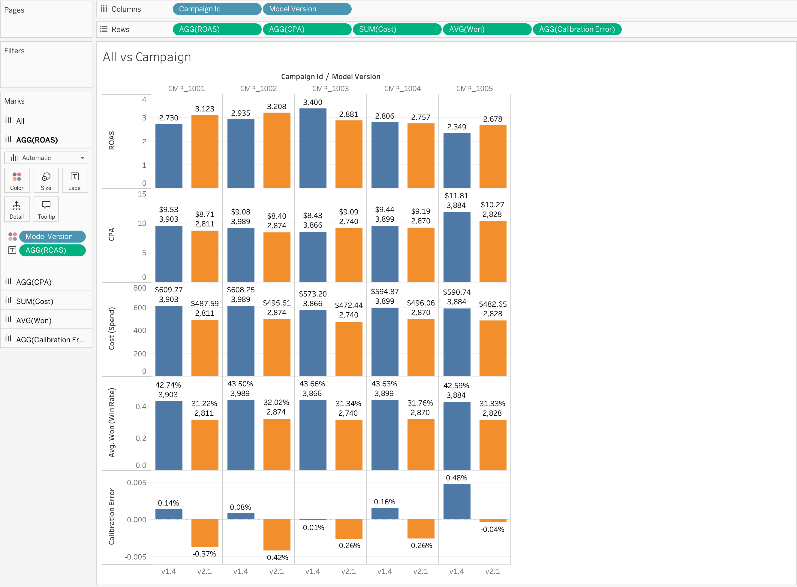
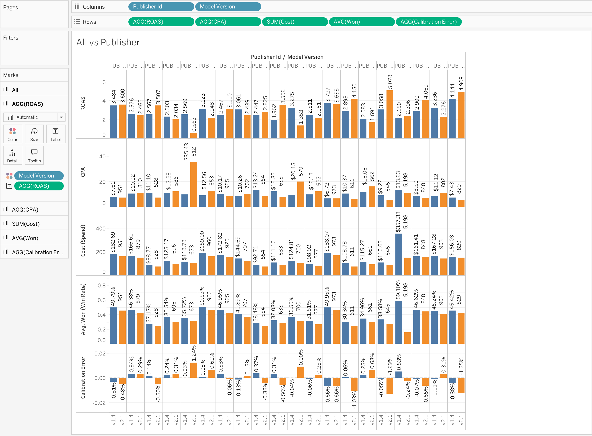
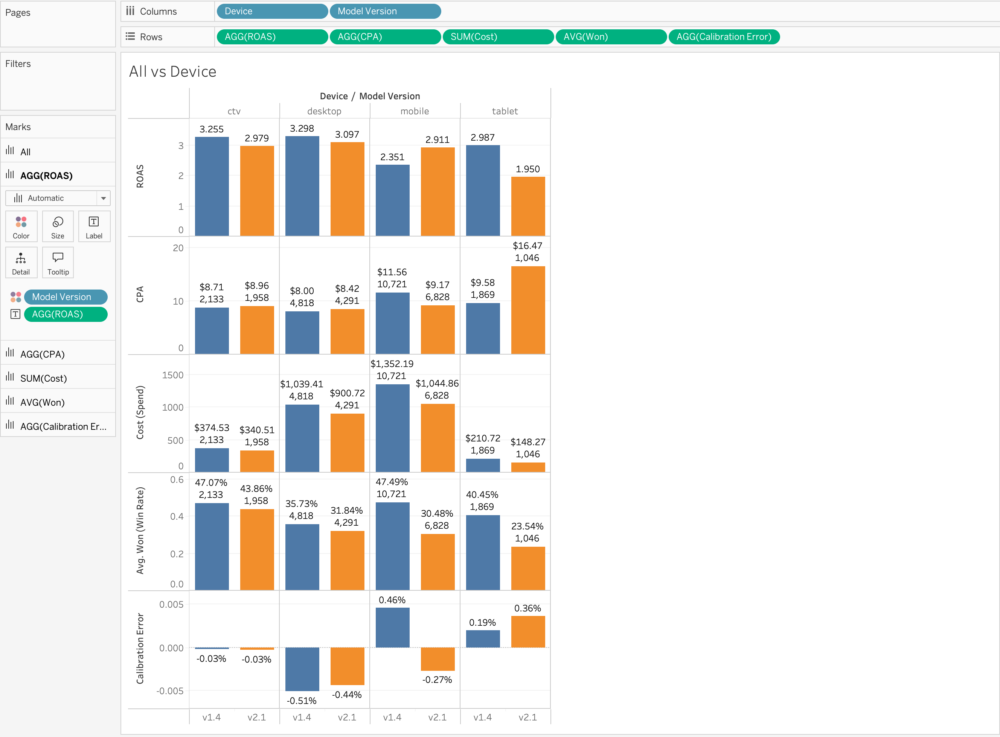
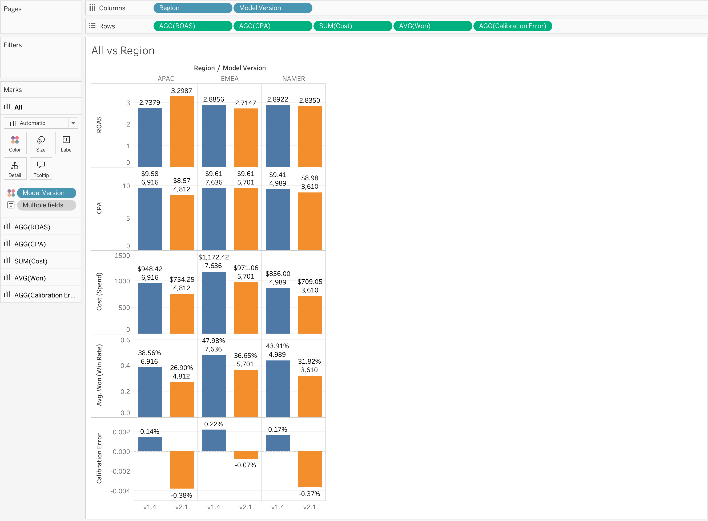
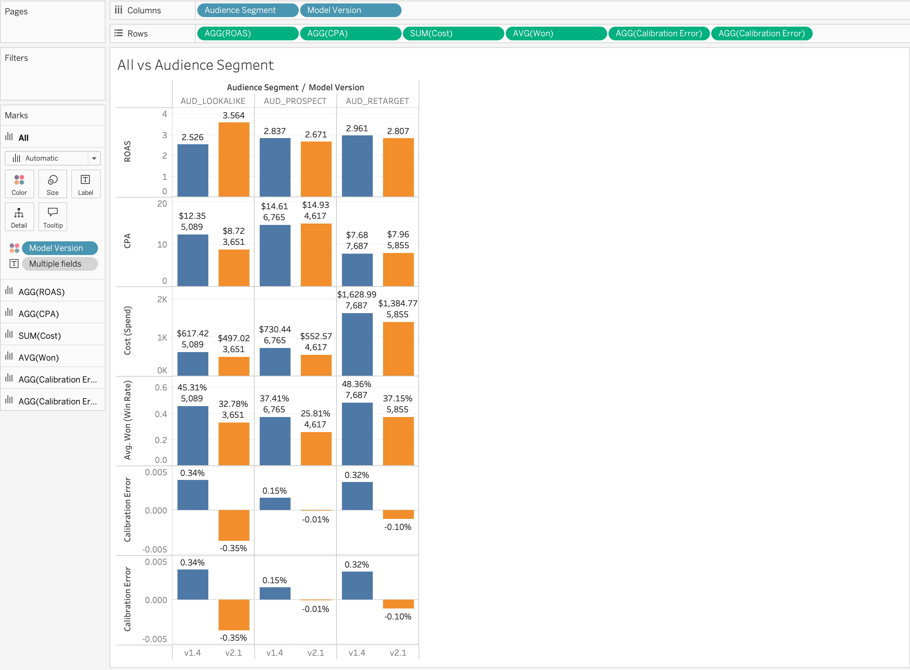
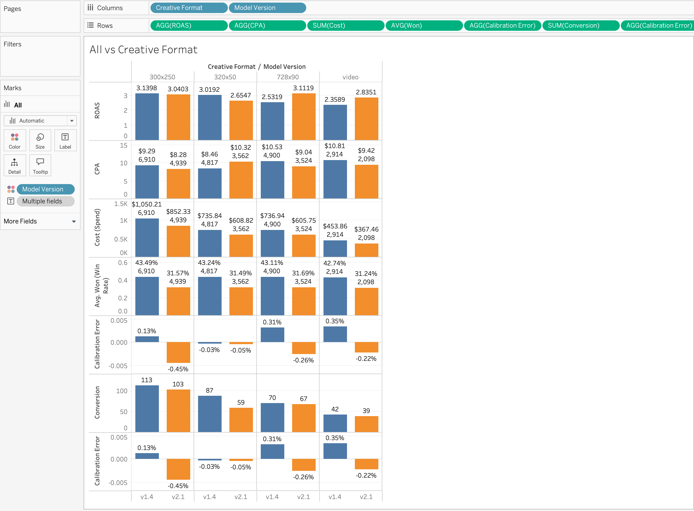
Click to enlarge graphs
v2.1 removes more inefficiency than it introduces.
Where v2.1 reduces waste
v1.4 weakness
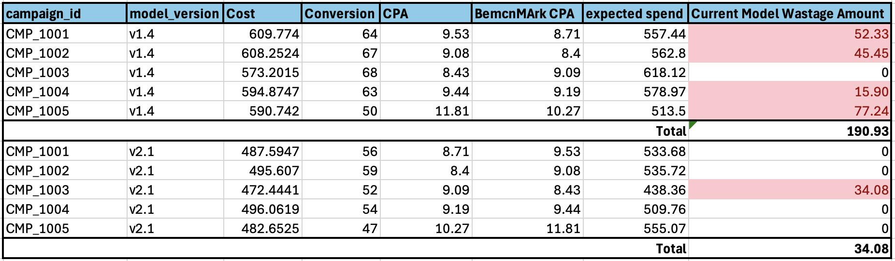
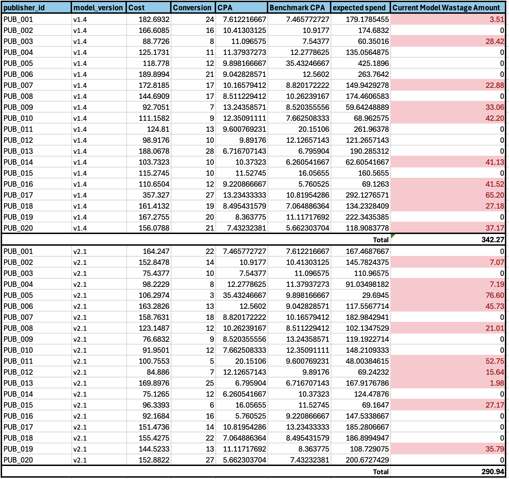
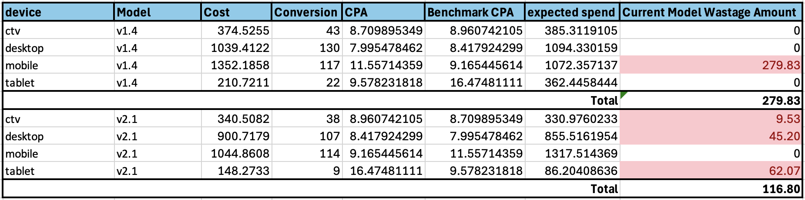
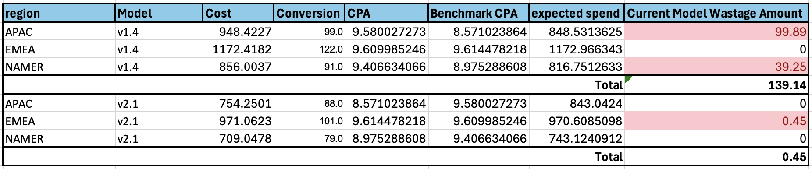
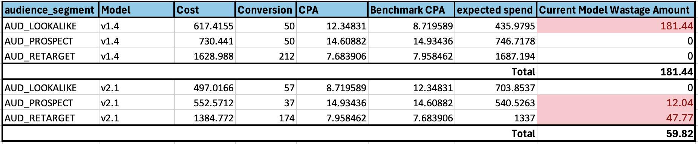
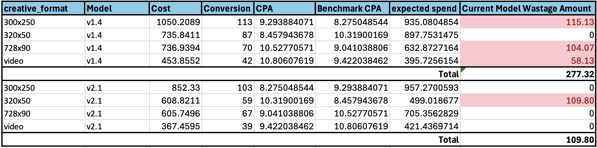
Click to enlarge graphs
Start with strong cohorts, isolate weak cohorts.
Ship v2.1
Hold / fix / fallback
Hybrid Routing
Instead of forcing one model to handle every auction, hybrid routing sends each type of traffic to the model that has demonstrated the better business outcome for that segment.
Prioritize Scope X analytically, but test the interaction with Scope Y before full rollout.
Scope X first
Scope Y as dependency if sensitivity flips
Move forward without losing control.
Monitor efficiency, delivery, calibration, and segment regressions.
Key risks
Metrics to monitor
Primary
- ROAS
- CPA
Guardrail
- Conversion volume
- Win rate
- Budget delivery (Spend)
- Predicted vs actual CVR
- Segment performance
Monitor v2.1 underperforming areas
The A/B test is directionally useful, but not fully decision-proof yet.
Validation questions
Example concern
“Pub_005 has only 3 conversions for v2.1 — we should not over-read that result.”
Use these cuts to guide rollout, not as final proof for every publisher-level decision.
Next model-improvement test and one traffic-quality test.
Experiment 1: Scope X fixes
ModelExperiment 2: Scope Y traffic quality
TrafficSuspicion triggers investigation. Confirmed compliance risk triggers blocking.
Traffic-quality call
Compliance call
Route each auction to the best validated model version.
User story
As a Data Science Product Manager, I want traffic routed to the model version that performs best for validated cohorts, so we capture v2.1 efficiency gains while avoiding known regression areas.
Acceptance criteria
v2.1 spends advertiser budgets more efficiently overall, but it is too conservative or misprices certain inventory segments.
Recommendation: controlled rollout, hybrid routing, Scope Y sensitivity analysis, and post-launch monitoring across ROAS, CPA, conversion volume, win rate, spend, and calibration.
Controlled rollout
Not a blind replacement. Ship where evidence is strongest, route around regressions, and use experiment results to decide full adoption.